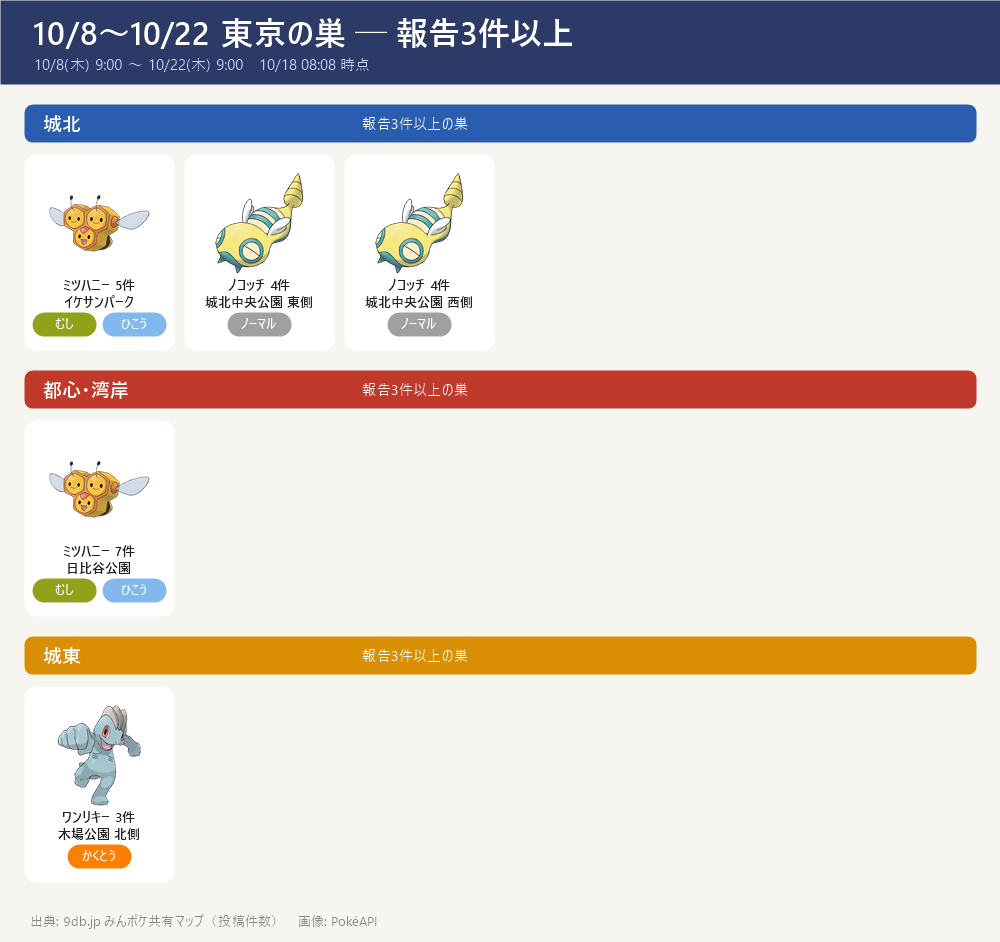

- 9db（みんポケ共有マップ）の東京都の巣：43種・のべ111か所・報告144件（10/18 08:08 に取得。3件以上の巣は5か所）
- 期間：10/8(木) 9:00 〜 10/22(木) 9:00（隔週木曜に入れ替わり・9db の開催一覧）。入れ替わり直後は報告が少ないので、数日おきに更新して育てる
- 見方：件数＝その場所で見たという投稿の数。3件以上はほぼ確実、1件だけの巣は見間違いや一時的な出現のこともある。件数は人の多い公園ほど増えやすい
- 10/18 時点：東京の報告は144件（43種・111か所）。10/16 の130件から少し増えた。この期間は 10/22(木) 9:00 まで（残り約3日半）
- モグリューの巣が4か所（各1件）：西池袋公園・小石川植物園・石川島公園・和田堀公園。10/18 も4か所・各1件のまま。野生で捕まえてアメを貯めれば ドリュウズ（アメ50）→ 11/14 ディアルガ戦の主力。1件ずつなので、行く前にみんポケの最新報告も見る。小石川植物園は入園料がかかり、月曜は休み
- 杉並で2つ回れる：善福寺川公園（ケーシィ）→ 和田堀公園ゲートボール場（モグリュー）（善福寺川沿い・約1.7km、徒歩25分ほど）。どちらも1件なので、行く前にみんポケの最新報告も見る。モグリューは晴れ、ケーシィは強風でブースト
- 確かな巣（3件以上）：日比谷公園 ミツハニー（7件）、イケサンパーク ミツハニー（5件）、城北中央公園 ノコッチ（東側・西側とも4件）、木場公園 北側 ワンリキー（3件・10/16 の2件から増えた）
- 池袋で2つ回れる：西池袋公園（モグリュー）→ イケサンパーク（ミツハニー）（徒歩20分ほど）。続けて小石川植物園（モグリュー）まで行くなら 3か所の徒歩ルート
- ラクライ（色違い率アップ中・秋の遠足 ～10/19 20:00）：辰巳の森海浜公園・辰巳の森緑道公園（各2件）。おこうのボーナスと重なるので色違い狙いに
- 同じ公園に2種：篠崎公園（ニドラン♀・ケムッソ）、わかぐさ公園（チルット・ゾロア）
- 前回(10/9)から変わらず：城北中央公園 ノコッチ（1件→4件）、戸山公園 ヨーテリー（大久保地区2件）、豊島区立長崎公園 ニョロモ（2件）、上野恩賜公園 ネイティ
- 色違い：43種が色違いの出るポケモン（9db の色違いマーク）
- 天気でブースト（その天気のとき出やすく・強くなる）：晴れ＝クルミル・シシコ・スナバァ・タマタマ・ナゾノクサ・ヒトカゲ・モグリュー・ユキカブリ／雨＝アゴジムシ・エモンガ・キャタピー・クルミル・ケムッソ・コイル・コダック・シママ・ニョロモ・フシデ・ミツハニー・ヤンヤンマ・ラクライ／ときどき曇り＝オドシシ・シシコ・スバメ・チラーミィ・チルット・ヌイコグマ・ノコッチ・ポッポ・ヨーテリー／強風＝エモンガ・ケーシィ・スバメ・スリープ・タマタマ・チルット・ネイティ・バネブー・ポッポ・ミツハニー・ヤンヤンマ／曇り＝ゴクリン・シュシュプ・スカンプー・ナゾノクサ・ニドラン♀・ニドラン♂・ヌイコグマ・ピッピ・フシデ・ブルー・マクノシタ・ワンリキー／雪＝コイル・ユキカブリ／霧＝スカンプー・スナバァ・ゾロア・ムウマ
報告3件以上の巣

エリア別の全リスト
- ■城北（中野・豊島・練馬・板橋・北・上野） 27か所
- ノコッチ：城北中央公園 東側(4)・城北中央公園 西側(4)
- ミツハニー：イケサンパーク(5)
- ブルー：光が丘公園(2)・おとめ山公園(1)
- ヨーテリー：戸山公園 大久保地区(2)・戸山公園(1)
- アゴジムシ：高田第三公園(2)・トキワ荘公園(1)
- ナゾノクサ：哲学堂公園(1)・鶴巻南公園(1)
- ニョロモ：豊島区立長崎公園(2)
- ムウマ：大隈庭園(1)・平和の森公園(1)
- モグリュー：小石川植物園(1)・西池袋公園(1)
- エモンガ：江古田の森公園(2)
- ヒトカゲ：上野恩賜公園(1)
- ニドラン♂：椿山荘(1)
- ピッピ：中野四季の森公園 イベントエリア(1)
- コダック：飛鳥山公園(1)
- コイル：夏の雲公園(1)
- ネイティ：上野恩賜公園(1)
- オドシシ：南長崎はらっぱ公園(1)
- スバメ：戸山公園 箱根山地区(1)
- チラーミィ：六義園(1)
- スナバァ：東池袋中央公園(1)
- ■城西・城南（杉並・世田谷・目黒・大田） 18か所
- ケーシィ：世田谷公園(1)・善福寺川公園(1)
- ノコッチ：こどもの広場公園 東側(1)・田園調布せせらぎ公園(1)
- チルット：羽根木公園(1)・羽根木公園（北）(1)
- キャタピー：林試の森公園(1)
- スリープ：下高井戸おおぞら公園(1)
- ネイティ：大蔵運動公園(1)
- ブルー：東山公園(1)
- スバメ：砧公園(1)
- ラクライ：洗足池公園(1)
- バネブー：鮫洲入江広場(1)
- ユキカブリ：こどもの広場公園 西側(1)
- シママ：蘆花恒春園(1)
- モグリュー：和田堀公園ゲートボール場(1)
- フシデ：二子玉川公園(1)
- アゴジムシ：駒沢オリンピック公園(1)
- ■都心・湾岸 6か所
- ミツハニー：日比谷公園(7)
- ピッピ：水の広場公園(1)
- マクノシタ：新宿御苑(1)
- モグリュー：石川島公園(1)
- フシデ：代々木公園(1)
- シュシュプ：新宿中央公園(1)
- ■城東（江東・墨田・江戸川・葛飾・荒川） 23か所
- ラクライ：辰巳の森海浜公園(2)・辰巳の森緑道公園(2)・新小岩公園(1)
- ワンリキー：木場公園 北側(3)
- シュシュプ：葛西臨海公園(2)・葛西臨海公園 鳥類園(1)
- コダック：アクロシティ庭園(2)
- ヤンヤンマ：水元公園(2)
- ノコッチ：しょうぶ沼公園(2)
- ケムッソ：にいじゅくみらい公園(1)・篠崎公園(1)
- シママ：亀戸南公園(1)・錦糸公園(1)
- ニドラン♀：篠崎公園(1)
- ニョロモ：若洲公園(1)
- ケーシィ：都立中川公園(1)
- スバメ：辰巳の森緑道公園 西側(1)
- マクノシタ：花の広場(1)
- バネブー：木場公園 南側(1)
- ミツハニー：にいじゅくみらい公園 多目的広場(1)
- スカンプー：南砂三丁目公園(1)
- クルミル：亀戸中央公園(1)
- ヌイコグマ：小菅東スポーツ公園(1)
- ■多摩 37か所
- ミツハニー：府中郷土の森金塚桜広場(2)・芹ヶ谷公園(2)・拓殖大学 八王子国際キャンパス陸上競技場(1)
- ニドラン♂：多摩中央公園(2)・富士森公園(1)
- ブルー：秋留台公園(1)・草花公園(1)・西河原自然公園(1)
- ヌイコグマ：小平市立中央公園(1)・東村山中央公園(1)・西河原公園(1)
- ニドラン♀：大谷戸公園(1)・都立狭山公園(1)
- タマタマ：井の頭恩賜公園(2)
- ネイティ：井の頭自然文化園(1)・東大和南公園(1)
- ゴクリン：大南公園(1)・日野市民の森スポーツ公園(1)
- チルット：わかぐさ公園(1)・片倉城址公園(1)
- キャタピー：仲田の森蚕糸公園(1)
- ポッポ：東豊田公園(1)
- コダック：日野市立あずまちょう地区広場(1)
- コイル：乞田・貝取ふれあい広場(1)
- ヤンヤンマ：石神井公園(1)
- ムウマ：小金井公園(1)
- ノコッチ：町田中央公園(1)
- スバメ：きたみふれあい広場(1)
- マクノシタ：堀之内番場公園(1)
- バネブー：鶴間公園南側(1)
- スカンプー：東宝調布スポーツパーク(1)
- ユキカブリ：立野公園(1)
- フシデ：都立東伏見公園(1)
- ゾロア：わかぐさ公園(1)
- エモンガ：殿ヶ谷戸庭園(1)
- シシコ：立川公園(1)
- アゴジムシ：子安公園(1)
出典: 9db.jp みんポケ共有マップ（東京都の巣・投稿件数）。他サイトとは照合していない
画像: PokéAPI